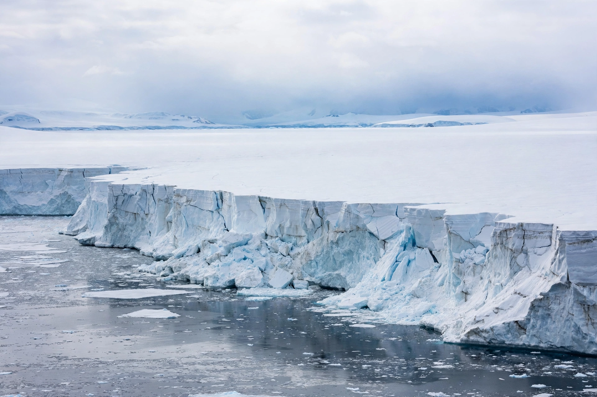

 | |
| Area | About 14 million km² |
|---|---|
| Volume | About 26.5 million km³ of ice |
| Sea level equivalent | About 58 m |
| Maximum thickness | Roughly 4.8 km |
The Antarctic ice sheet is one of the two polar ice caps of Earth, the other being the Greenland ice sheet. It covers about 98% of the Antarctic continent and is the largest single mass of ice on Earth, containing roughly 61% of all fresh water on the planet. If it melted entirely, global sea level would rise by about 58 metres.
The ice sheet is divided by the Transantarctic Mountains into the much larger East Antarctic Ice Sheet and the smaller West Antarctic Ice Sheet. The East Antarctic sheet rests largely on land above sea level and is extremely cold and thick — up to about 4.8 km — while much of the West Antarctic sheet is grounded below sea level, making it potentially vulnerable to rapid retreat. Floating ice shelves, including the Ross and Filchner–Ronne ice shelves, fringe about a third of the coastline.
Antarctica began to glaciate about 34 million years ago, at the Eocene–Oligocene transition, as atmospheric carbon dioxide fell and the continent became isolated by the opening of the Drake Passage and the development of the Antarctic Circumpolar Current. Ice cores drilled from the sheet — including the EPICA Dome C core reaching back some 800,000 years — provide key records of past climate and atmospheric composition.
Satellite measurements show that Antarctica has been losing ice mass in recent decades, with losses concentrated in West Antarctica and the Antarctic Peninsula, partly offset by gains from snowfall in parts of East Antarctica. Ice loss is driven mainly by warm ocean water thinning floating ice shelves and accelerating the flow of outlet glaciers such as Pine Island and Thwaites glaciers. Antarctic ice loss is a major contributor to present-day sea level rise and the largest source of uncertainty in future projections.